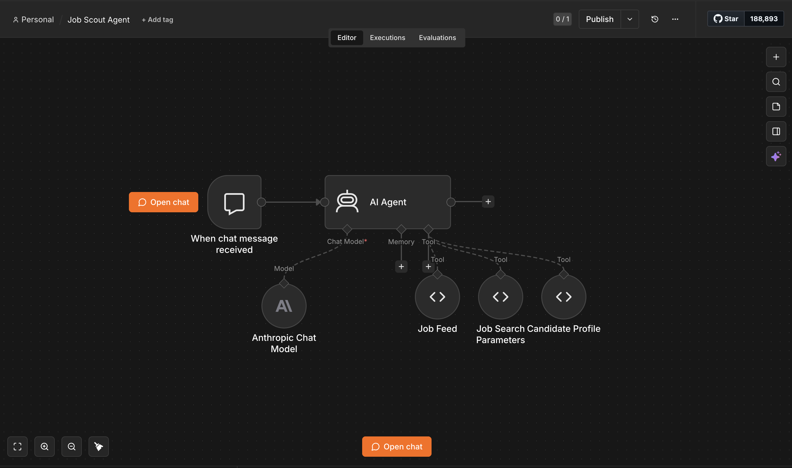
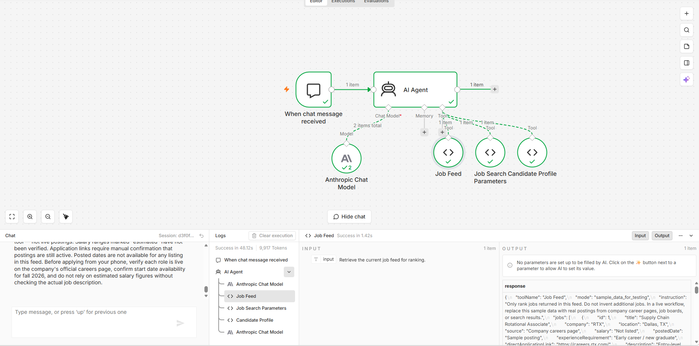
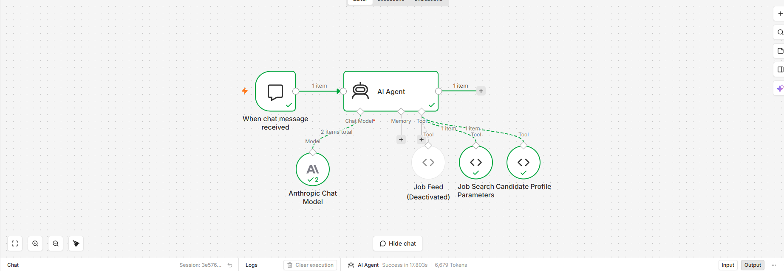
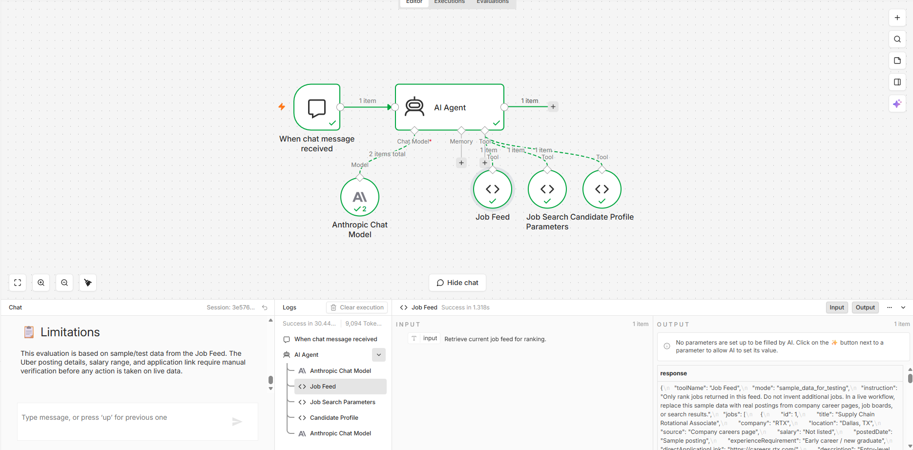

Built an agentic AI workflow in n8n to keep a job pipeline warm while traveling abroad with only a phone. The agent calls three custom tools, ranks job opportunities against a candidate profile, and fails safely when data sources are unavailable.
This lab explores how an agentic AI workflow differs from a standard LLM chat session. Instead of answering one question at a time, the Job Scout Agent connects three purpose-built tools, calls them in sequence, and produces a ranked application queue that a job seeker can review from a phone while traveling.
The workflow was tested in three scenarios: a full successful run ranking eight sample postings, a break test with the Job Feed tool deactivated, and a bad-fit test evaluating a role that was clearly misaligned. Each test was designed to reveal a different dimension of how the agent handles data, guardrails, and failure.
The core finding: the agent is only as reliable as its tools and its instructions. Guardrails in the system prompt determined whether the agent failed safely when data was unavailable. Without them, the agent could have invented plausible-sounding jobs that did not exist.
A normal LLM is mostly text in, text out. It can give advice, summarize a job description, or write a plan, but it depends on the user to bring all the information into the chat. A Level 2 agent can use tools, but the user still directs each step. A more agentic workflow is different: the designer connects the tools, sets the guardrails, and gives the agent a goal.
For this lab, the recurring task is keeping a job pipeline warm while traveling abroad with only a phone. A Level 2 version would require pasting one job description at a time and asking if it is a fit. The Level 3 version built here calls a Candidate Profile tool, pulls Job Search Parameters, retrieves a Job Feed, and ranks the available roles into an application queue automatically.
The agent supports the decision but should not own the decision. Every recommendation still requires human review before applying, changing a resume, or contacting anyone.
The workflow was built in n8n. A Chat Trigger node receives the user's request and passes it to an AI Agent node. The AI Agent is backed by Claude Sonnet 4.6 via the Anthropic Chat Model node. Three Code Tool nodes are connected to the AI Agent and available for it to call at any time.
Each tool is a Code Tool node in n8n that returns a structured payload. The Candidate Profile tool returns the candidate's internship history, target roles, and weak-fit signals. The Job Search Parameters tool returns scoring rules, location preferences, and compensation floors. The Job Feed tool returns a structured JSON array of job postings for the agent to rank.
The agent must call all three tools before producing any ranked output. This prevents it from making assumptions about the candidate's background or inventing job postings from general knowledge.

In the successful run, the agent called all three tools and confirmed what each one returned before ranking the jobs. It ranked Anduril's Procurement Analyst role and RTX's Supply Chain Rotational Associate role highest, which made sense based on the candidate's sourcing, supply chain, and aerospace background.
The output was useful because it did not just summarize jobs. It created a phone-friendly application queue with fit scores, risks, and next steps that could be reviewed without a laptop.
| # | Company | Role | Location | Score | Action |
|---|---|---|---|---|---|
| 1 | Anduril Industries | Procurement Analyst | Costa Mesa, CA | 93 | Apply |
| 2 | RTX | Supply Chain Rotational Associate | Dallas, TX | 91 | Apply |
| 3 | Space Systems Manufacturer | Buyer / Planner | Long Beach, CA | 85 | Apply |
| 4 | Blue Origin | Materials Planner | Kent, WA | 80 | Save |
| 5 | Parker Hannifin | Operations Leadership Dev Program | Cleveland, OH | 78 | Apply |
| 6 | Apple | Senior Strategic Sourcing Manager | Cupertino, CA | 28 | Skip |
| 7 | RetailCo | Business Analyst, Marketing Analytics | Seattle, WA | 22 | Skip |
| 8 | Uber | Data Scientist, Marketplace Optimization | San Francisco, CA | 10 | Skip |

To test failure behavior, the Job Feed tool was deactivated in n8n and the same job recommendation prompt was run again. This was the most important break test because the job feed is the agent's only source of actual opportunities. Without it, the agent should not create a ranked list.
The agent failed safely. It called the remaining two tools, noticed that the Job Feed tool was unavailable, and stopped instead of inventing jobs. That was exactly the behavior required by the guardrail in the system prompt.
This test showed that tools make an agent useful, but guardrails determine whether it fails safely. A weaker agent without an explicit stop rule might have created fake job postings from general knowledge, which would waste time and could send a job seeker after roles that do not exist.

The agent was tested on a clearly misaligned role: Senior Data Scientist, Marketplace Optimization at Uber. The role offered a strong salary ($130K–$160K) and a well-known company, but it required production machine learning, advanced Python, statistics, and model deployment. Those requirements do not match a target path in sourcing, procurement, operations, or supply chain.
The agent correctly scored the role low and recommended Skip. It explained that the role was a poor fit because it was pure data science, too technical, and misaligned with the stated career direction. It did not chase the salary or the brand name.

The output was audited by checking whether ranked jobs came from the Job Feed and whether the agent invented anything outside the tool data. In the successful run, the agent ranked only the eight jobs from the structured Job Feed and clearly stated that the feed was sample data.
The agent also flagged salary estimates, manual verification requirements, and missing posted dates instead of pretending those details were confirmed. Ranking logic was mostly reasonable: Anduril, RTX, the Space Systems Buyer/Planner role, Blue Origin, and Parker Hannifin were ranked above weak-fit roles.
The biggest limitation is that the feed was sample data rather than live postings. At scale, auditing every result manually would not be realistic. More scalable checks would include verifying that every ranked job has a source URL, flagging missing salary or application links, deduplicating postings, sample-checking high-fit recommendations, and tracking whether the agent's top picks are actually worth pursuing over time.
A governance framework defines what the Job Scout Agent is allowed to do, what it cannot do, and how it should be monitored over time.
The biggest concern is not that the agent will replace human judgment. The bigger concern is that a bad agent could quietly create a misleading job pipeline. If it invents roles, overstates fit, ignores seniority requirements, or pushes toward jobs that do not match stated goals, it could waste time and damage an application strategy.
The benefits outweigh the risks if the system is designed correctly. The guardrail is straightforward: the agent can recommend, rank, and draft notes, but it cannot apply or contact anyone without human approval. It also cannot invent jobs or bypass restricted platforms. If the system only works from verified feeds, manually supplied postings, or job alerts, it becomes a useful assistant rather than a risky automation.
The core question is not whether to use AI, but whether the workflow has enough guardrails to fail safely when the inputs are wrong or the tools are broken.
I would let this agent run in the background to collect and rank opportunities, but I would not let it run unsupervised through application submission. Before trusting it more, it would need to prove over several weeks that it can rank jobs accurately, avoid fake postings, reject poor-fit roles, and produce useful next steps from real job feeds.
Compared with healthcare agents like an insurance appeal agent, the stakes here are lower, but the governance logic is similar. In both cases, the agent can draft and prioritize, but a human should review before anything is submitted. For a job search, the risk is wasted time or poor positioning. In healthcare, the risk could affect patient care or reimbursement. The common lesson is that agentic AI is strongest when it expands human capacity without removing human accountability.
The current workflow uses a static sample job feed. A production version would need live data sources and several additional capabilities.